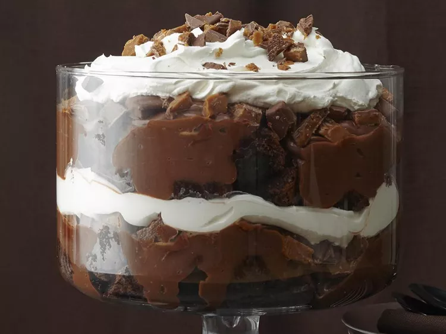

Death by chocolate

Death by chocolate Trifle
This death by chocolate trifle is a true favorite. Every time we
have a church supper, I have to make this!
Ingredients
- 1 (18.4 ounce) package brownie mix (such as Betty Crocker)
- 2 large eggs
- 1/2 cup vegetable oil
- 3 tablespoons water
- 4 cups milk
- 2 (3.9 ounce) packages instant chocolate pudding mix
- 3 (1.4 ounce) bars chocolate covered English toffee
- 1 (16 ounce) package frozen whipped topping, thawed
Steps
-
Preheat the oven to 350 degrees F (175 degrees C). Grease a
9x13-inch baking pan.
-
Make the brownies: Combine brownie mix, eggs, vegetable oil, and
water in a large bowl. Mix with a wooden spoon until well
blended. Spread into the prepared baking pan.
-
Bake in the preheated oven until a toothpick inserted 2 inches
from the side of the pan comes out clean, about 25 minutes. Let
cool completely.
-
Meanwhile, prepare the pudding: Whisk milk and pudding mix
together in a large bowl until smooth; set aside.
-
To assemble: Crumble 1/2 of the brownies on the bottom of a
glass punch bowl; spoon 1/2 of the pudding on top. Crush 1
toffee bar over pudding and top with 1/2 of the whipped topping.
Repeat layers in the same order, then refrigerate until ready to
serve, saving the last toffee bar to crumble and sprinkle on top
before serving.